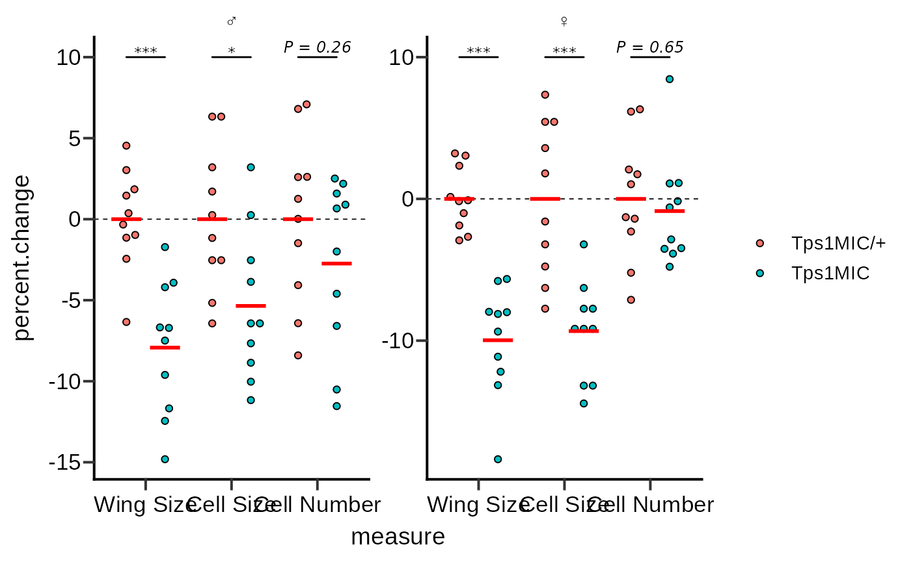
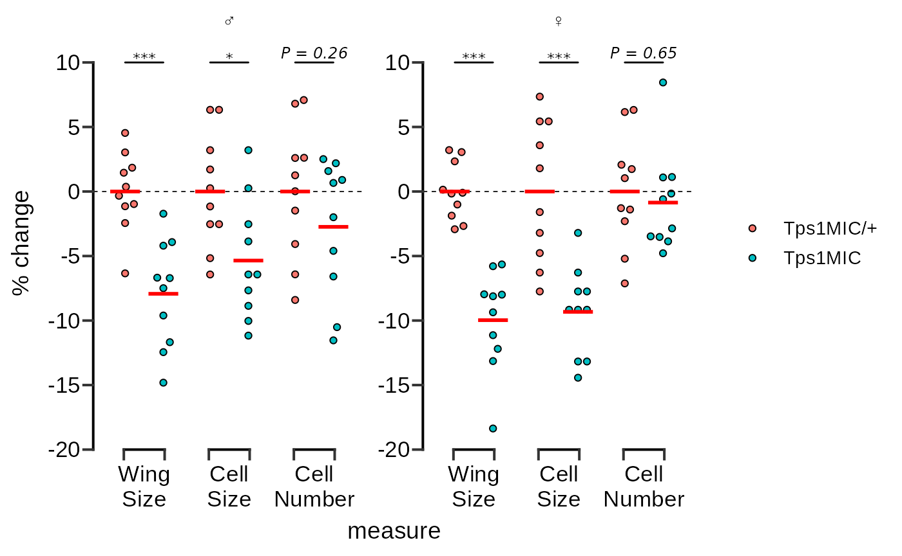
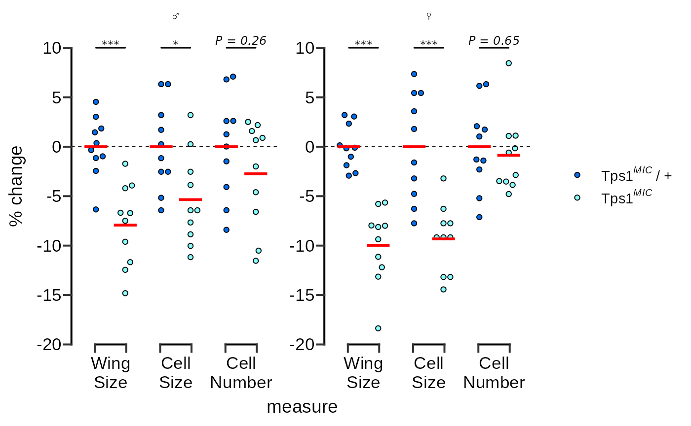
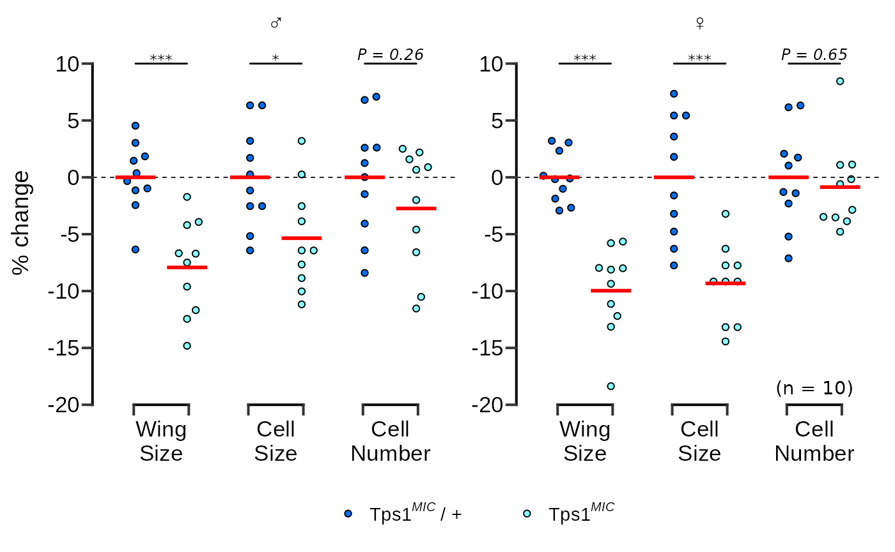

In this vignette we will recreate Figure 2B from Matsushita & Nishimura (2020)1 which was made in GraphPad Prism 7.
The authors of this paper mutate trehalose synthesis enzyme (Tps1) in fruit flies and then observe the effect of this mutation on their wings. Figure 2B, shown below, shows the percentage change in three fly wing attributes in homozygous Tps1 mutants compared to heterozygous Tps1 mutants. The data are separated according to the sex of the fly.

Figure 2B from Matsushita & Nishimura (2020)
The raw data underlying Figure 2B is accessible in the article’s Supplementary Data. For ease of use, this small data set (aptly named wings) has been ‘tidied’ and is provided with the ggprism package.
Preparation
To recreate this figure we begin with loading the required packages and data set.
library(dplyr)
#>
#> Attaching package: 'dplyr'
#> The following objects are masked from 'package:stats':
#>
#> filter, lag
#> The following objects are masked from 'package:base':
#>
#> intersect, setdiff, setequal, union
library(ggplot2)
library(ggprism)
library(ggbeeswarm)
library(rstatix)
#>
#> Attaching package: 'rstatix'
#> The following object is masked from 'package:stats':
#>
#> filter
data("wings")
head(wings)
#> # A tibble: 6 x 4
#> sex genotype measure percent.change
#> <fct> <fct> <fct> <dbl>
#> 1 male Tps1MIC/+ wing.size -2.45
#> 2 male Tps1MIC/+ cell.size 6.33
#> 3 male Tps1MIC/+ cell.number -8.41
#> 4 male Tps1MIC/+ wing.size -1.14
#> 5 male Tps1MIC/+ cell.size -2.53
#> 6 male Tps1MIC/+ cell.number 1.26The data are already in ‘long format’ so we could just jump straight to plotting. However, we can see that the text in the measure column is not in title case so we’ll need to quickly do some string manipulation.
# substitute period with space, convert to title case, convert back to factor
wings$measure <- wings$measure %>%
gsub("\\.", " ", .) %>%
tools::toTitleCase() %>%
factor(., levels = c("Wing Size", "Cell Size", "Cell Number"))
head(wings)
#> # A tibble: 6 x 4
#> sex genotype measure percent.change
#> <fct> <fct> <fct> <dbl>
#> 1 male Tps1MIC/+ Wing Size -2.45
#> 2 male Tps1MIC/+ Cell Size 6.33
#> 3 male Tps1MIC/+ Cell Number -8.41
#> 4 male Tps1MIC/+ Wing Size -1.14
#> 5 male Tps1MIC/+ Cell Size -2.53
#> 6 male Tps1MIC/+ Cell Number 1.26Adjusting theme elements
With the data-related elements in place we can turn to changing the overall plot theme and appearance. First, we’ll apply theme_prism(). By default the theme uses all bold font so we set base_fontface = "plain" so that all text is of normal weight.
# apply theme_prism()
p <- p + theme_prism(
base_fontface = "plain",
base_line_size = 0.7,
base_family = "Arial"
)
p
We’ll need to fix the x axes text as the labels are overlapping, and the axes use brackets instead of a line. We can fix the labels using line breaks as in the original plot, and also set the axes guides to guide_prism_bracket().
# change the x axis to brackets and add line breaks to the axis text
p <- p + scale_x_discrete(
guide = guide_prism_bracket(width = 0.15),
labels = scales::wrap_format(5)
)
pNow we’ll fix the y axes so that they are identical as in the original Figure 2B. We’ll also apply the guide_prism_offset() guide so the axis line doesn’t extend beyond the outermost tick marks. Additionally, we’ll adjust the y axis title.
# adjust the y axis limits and change the style to 'offset'
p <- p + scale_y_continuous(
limits = c(-20, 12),
expand = c(0, 0),
breaks = seq(-20, 10, 5),
guide = "prism_offset"
) +
labs(y = "% change")
p The plot is already looking good as is. But the goal of this vignette is to recreate the original as closely as possible, so we will continue with some minor adjustments.
We need to use scale_fill_manual() to change the point fills to match. We’ll also fix the formatting of the legend text in this step.
# change the point fill and adjust the legend text formatting
p <- p + scale_fill_manual(
values = c("#026FEE", "#87FFFF"),
labels = c(expression("Tps"*1^italic("MIC")~"/ +"),
expression("Tps"*1^italic("MIC")))
)
p
Next we’ll do a few things at once in one call of the theme() function:
- Move the legend below the plot
- Remove the x axis title
- Make the male and female symbols larger
- Make the legend more compact
- Reduce the space between the legend symbols and the legend text
p <- p + theme(
legend.position = "bottom",
axis.title.x = element_blank(),
strip.text = element_text(size = 14),
legend.spacing.x = unit(0, "pt"),
legend.text = element_text(margin = margin(r = 20))
)
pThe original graph also has a label with the number of replicates in the bottom right corner of the plotting area. This is a little tricky to do with facets and requires creating a dummy data.frame to get the positioning correct.
# add n = 10 as a text annotation
p <- p + geom_text(
data = data.frame(
sex = factor("female", levels = c("male", "female")),
measure = "Cell Number",
percent.change = -18.5,
lab = "(n = 10)"
),
aes(label = lab)
)
p
The final thing to do is just make the legend symbols a bit larger using the overrride.aes argument in guide_legend().
# make the points larger in the legend only
p <- p + guides(fill = guide_legend(override.aes = list(size = 3)))
pAnd that’s it! Our ggplot graph is almost identical to the original.
Figure 2B from Matsushita & Nishimura (2020)
Plot source code
Here is the complete code for the plot.
wings_pvals <- wings %>%
group_by(sex, measure) %>%
rstatix::t_test(
percent.change ~ genotype,
p.adjust.method = "BH",
var.equal = TRUE,
ref.group = "Tps1MIC/+"
) %>%
rstatix::add_x_position(x = "measure", dodge = 0.9) %>% # dodge must match points
mutate(label = c("***", "*", "P = 0.26", "***", "***", "P = 0.65"))
ggplot(wings, aes(x = measure, y = percent.change)) +
ggbeeswarm::geom_beeswarm(aes(fill = genotype), dodge.width = 0.9, shape = 21) +
facet_wrap(~ sex, scales = "free",
labeller = labeller(sex = c(male = "\u2642", female = "\u2640"))) +
geom_hline(yintercept = 0, linetype = 2, size = 0.3) +
stat_summary(geom = "crossbar", aes(fill = genotype),fun = mean,
position = position_dodge(0.9), colour = "red", size = 0.4, width = 0.7,
show.legend = FALSE) +
add_pvalue(wings_pvals, y = 10, xmin = "xmin", xmax = "xmax",
tip.length = 0, fontface = "italic",
lineend = "round", bracket.size = 0.5) +
theme_prism(base_fontface = "plain", base_line_size = 0.7,
base_family = "Arial") +
scale_x_discrete(guide = guide_prism_bracket(width = 0.15),
labels = scales::wrap_format(5)) +
scale_y_continuous(limits = c(-20, 12), expand = c(0, 0),
breaks = seq(-20, 10, 5), guide = "prism_offset") +
labs(y = "% change") +
scale_fill_manual(values = c("#026FEE", "#87FFFF"),
labels = c(expression("Tps"*1^italic("MIC")~"/ +"),
expression("Tps"*1^italic("MIC")))) +
theme(legend.position = "bottom",
axis.title.x = element_blank(),
strip.text = element_text(size = 14),
legend.spacing.x = unit(0, "pt"),
legend.text = element_text(margin = margin(r = 20))) +
geom_text(data = data.frame(sex = factor("female", levels = c("male", "female")),
measure = "Cell Number",
percent.change = -18.5,
lab = "(n = 10)"),
aes(label = lab)) +
guides(fill = guide_legend(override.aes = list(size = 3)))Matsushita, R., Nishimura, T. Trehalose metabolism confers developmental robustness and stability in Drosophila by regulating glucose homeostasis. Commun Biol 3, 170 (2020). https://doi.org/10.1038/s42003-020-0889-1↩︎